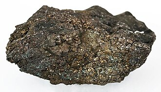
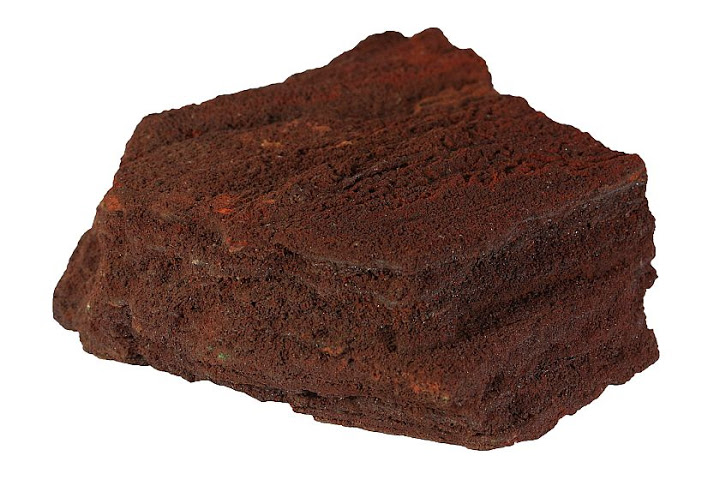
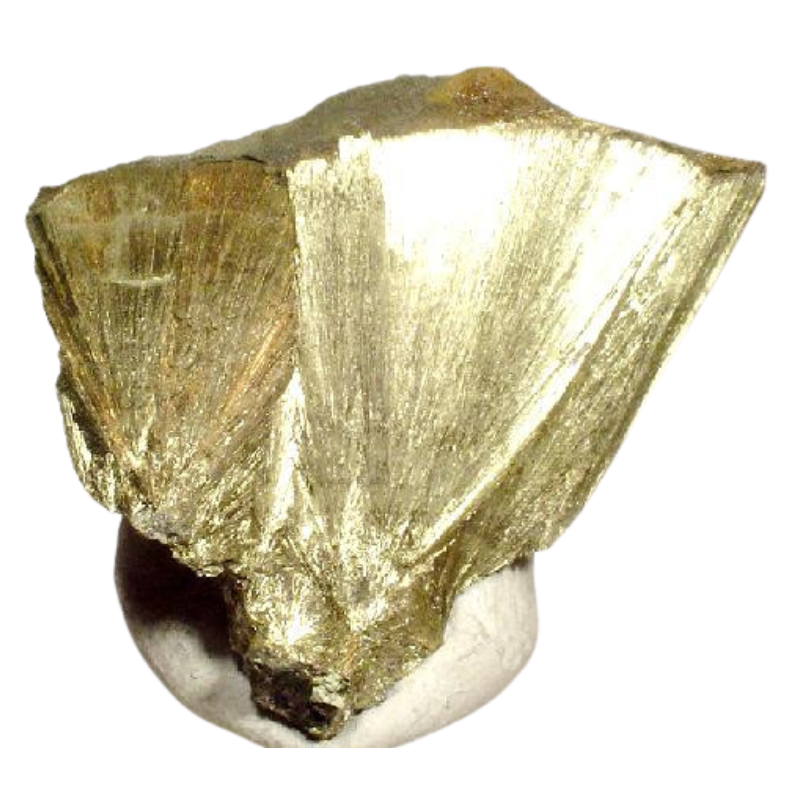

O cientista responsável pela descoberta do elemento foi Axel Fredrik Cronstedt, um químico e mineralogista sueco.
Como ocorreu a descoberta
Durante gerações, mineradores alemães encontravam nas minas um minério que se
assemelhava muito ao minério de cobre. No entanto, ao tentarem extrair o cobre
desse material, eles não obtinham o metal esperado e a extração falhava.
Por acreditarem que o mineral estava "amaldiçoado", os mineradores o apelidaram
de “Kupfernickel” (que significa "cobre do diabo" ou "falso cobre").
Em 1751, na Suécia, Cronstedt decidiu analisar amostras desse mesmo minério e
ao invés de obter cobre, ele realizou um processo de redução do sulfato do mineral
utilizando carvão vegetal e agentes fundentes. Ao término da reação química,
o mineralogista obteve um metal de coloração branco-prateada e com propriedades
magnéticas, e então concluiu que havia isolado um elemento químico até então desconhecido.
Cronstedt batizou oficialmente o novo elemento de Níquel (Nickel), encurtando o termo
“Kupfernickel”.
Ocorrências do Níquel na natureza
Onde o elemento pode ser encontrado:
O Níquel está presente na crosta terrestre e no interior de meteoritos metálicos.
Se ocorre livre na natureza ou combinado com outros elementos?
Ocorre predominantemente combinado a outros elementos como sulfetos e óxidos, sendo raro encontrar este elemento em estado livre.
Principais minerais, substâncias ou fontes em que está presente:
Ocorre predominantemente combinado a outros elementos como sulfetos e óxidos, sendo raro encontrar este elemento em estado livre.

Pentlandita

Lateritas

Millerita
Uso do Níquel no cotidiano
Indústria de Ligas e Aço Inoxidável
O Níquel é misturado ao ferro e ao cromo na produção do aço inoxidável usado em panelas, pias, talheres e revestimentos de eletrodomésticos, para que tenha uma melhora na resistência mecânica da liga metálica e aumente a proteção contra a enferrujamento, garantindo maior durabilidade ao material mesmo em contato frequente com água e sabão.
Baterias e Eletrônicos
É empregado como componente ativo nos eletrodos de baterias recarregáveis, como as de Níquel-Hidreto Metálico e as baterias de Íon-Lítio usadas em smartphones, notebooks e carros elétricos. O Níquel possui excelente capacidade de armazenar e conduzir energia elétrica de forma eficiente, permitindo produzir baterias com alta densidade de energia.
Hidrogenação de Óleos
É utilizado o pó de níquel no processo químico de hidrogenação de óleos vegetais para a fabricação de margarinas e gorduras vegetais hidrogenadas. O níquel atua como catalisador, ou seja, ele acelera a reação química que transforma óleos vegetais líquidos em gordura sólida em temperatura ambiente, sem ser consumido durante o processo.
Importância ou riscos do Níquel
Importância biológica
O níquel é essencial para a sobrevivência de diversos microrganismos que vivem em nosso intestino. Além disso, no ciclo do carbono, o níquel está presente em três enzimas: monóxido de carbono desidrogenase, acetil-CoA sintase e metil CoM redutase. A cada ano, essas três enzimas combinadas são responsáveis por remover cerca de 108 toneladas de monóxido de carbono do meio ambiente.
Importância econômica
Representa um recurso mineral estratégico para a indústria siderúrgica global devido à produção de aço inoxidável e ligas especiais para setores como aeroespacial, automotivo e na fabricação de turbinas e moedas, em material bélico, na área de construção civil, aços inoxidáveis, ou ainda na produção do ímã artificial conhecido como Alnico . Apresenta grande valor no mercado de tecnologia e energia pela sua aplicação indispensável em baterias recarregáveis para eletrônicos e veículos elétricos.
Impacto ambiental
É possível observar uma considerável poluição da água perto de minas de níquel, onde os metais pesados contaminam os cursos de água, prejudicando a vida aquática e a saúde pública. Isso ocorre em conjunto com a destruição de habitats (com o desmatamento tendo efeitos indiretos, como danos à biodiversidade e enfraquecimento das defesas contra a erosão) e a poluição do ar. Após a extração do níquel, sua manipulação causa novos impactos no meio ambiente, a fundição de níquel, é um processo que está associado a altas emissões de gases de efeito estufa e material particulado.
Toxicidade e riscos à saúde
A dermatite de contato é a condição de saúde mais comum associada à exposição ao níquel. A exposição ocupacional ao carbonil de níquel pode ser fatal. A exposição aguda e crônica ao níquel por inalação ou ingestão requer avaliação, tratamento e acompanhamento. A toxicidade aguda do níquel pode ocorrer por diversas vias, incluindo administração parenteral, ingestão, inalação e absorção dérmica. A forma mais perigosa é o carbonil de níquel, comumente associado à exposição ocupacional, que pode causar irritação do trato respiratório e outros sintomas inespecíficos. A toxicidade crônica do níquel pode se manifestar como sinusite, asma ocupacional e dermatite. A exposição prolongada ao níquel também tem sido associada ao desenvolvimento de câncer de pulmão e nasal.
Cuidados necessários em sua utilização
Utilizar Equipamentos de Proteção Individual adequados, como luvas, óculos de proteção, aventais e máscaras de respiração, para evitar o contato direto com as soluções químicas e inalação de vapores. A roupa deve ser apropriada para o ambiente de trabalho e resistente a produtos químicos. Outro cuidado importante é a ventilação adequada no local do processo. Os vapores gerados podem ser tóxicos, por isso, um sistema de exaustão eficiente deve estar instalado para proporcionar a circulação de ar fresco e remover gases nocivos. Também é importante fazer a manutenção regular dos equipamentos utilizados e manter um ambiente de trabalho limpo e organizado para prevenir acidentes.